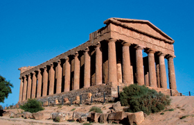

Lezione 3  Il mondo greco
Il mondo greco

Atene invece è il modello della polis democratica, essendo divenuta quasi il simbolo di tale regime politico. A partire da Solone (inizio VI secolo a.C.), si susseguirono diverse riforme che allargarono poco alla volta i poteri del popolo; tuttavia la vera nascita della democrazia è considerata la costituzione di Clistene del 508 a.C. È necessario premettere che la maggioranza della popolazione (donne, schiavi e stranieri) rimase comunque sempre esclusa dalla vita politica; tuttavia la novità è la sostanziale isonomía, cioè l’uguaglianza di fronte alla legge, di tutti gli altri cittadini. Essi facevano tutti parte dell’assemblea popolare, l’ecclesía, ed erano suddivisi in tribù, che includevano i diversi ceti sociali: così i rappresentanti eletti rispecchiavano veramente la provenienza sociale dei loro elettori. Tra le tribù venivano scelti i membri della bulé, che formulava le proposte di legge. Il comando dell’esercito era affidato a dieci strateghi, eletti dall’ecclesía, mentre la giustizia era amministrata dall’eliéa, tribunale popolare i cui membri erano scelti per sorteggio. Le uniche istituzioni aristocratiche rimaste erano gli arconti, e l’areópago, un consiglio di anziani, che tuttavia videro ridursi progressivamente i propri poteri. Un provvedimento fondamentale introdotto più tardi da Pericle era la mistoforía, una retribuzione giornaliera che spettava a chi esercitava una carica pubblica: in tal modo anche i più poveri poterono dedicarsi alla politica e la vita politica fu veramente aperta a tutto il popolo.